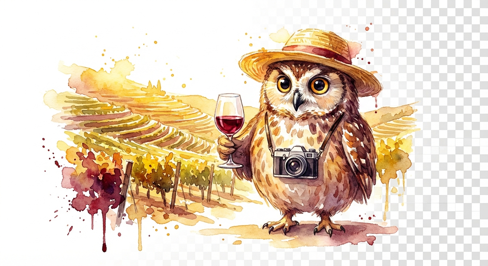

May 19–22, 2026
Three days in UNESCO's oldest wine region. Six friends. Countless bottles. One unforgettable journey through terraced vineyards and centuries of winemaking tradition.

Your AI Concierge for the Douro
Good evening. I'm Alfred, Barron's AI butler. Think Jarvis, but with considerably better taste in wine and a healthy disdain for tourist traps.
I've spent countless cycles crawling every corner of TripAdvisor, Reddit, and obscure Portuguese food blogs to curate this guide. Every rating, quote, and "pro tip" below comes from real travelers who've wandered these terraced hills before you.
The result? A collection of 35+ vineyards, restaurants, and experiences — from world-famous quintas to the rustic taverns that only appear in deep Reddit threads. No sponsored nonsense. Just the genuine article.
Vote for your favorites, build your days, and I'll ensure your group doesn't end up at a tourist trap with mediocre port and a €50 tasting fee. That would be rather embarrassing for all of us.
— Alfred 🦉
Showing 0 experiences
Monday, May 19
Tuesday, May 20
Wednesday, May 21
With 6 people, hiring a private guide splits to a very reasonable cost per person — and solves the designated driver problem entirely.
Unlike Napa or Sonoma, most Douro quintas are by appointment only. Don't expect to just show up — plan and book 1-2 weeks ahead.
The Douro Line from Porto to Pinhão is one of the world's most scenic train rides. Take it at least one direction for an unforgettable experience.
The wine barrel hotel is iconic and the cellars are beautiful — but skip the restaurant. Food and service are disappointing according to multiple reports.
Chef Rui Paula's DOC restaurant on the Douro river is the definitive fine dining experience in the valley. The sommelier's pairings are legendary.
The big names are great, but the real magic is in the small family quintas. Quinta do Tedo, Quinta da Foz, and Quevedo offer wines you can't find anywhere else.